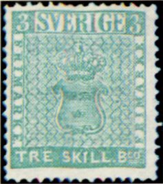
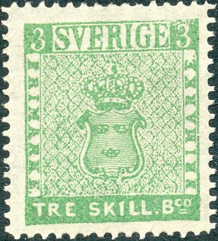
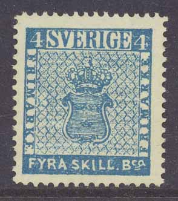
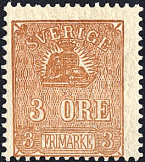
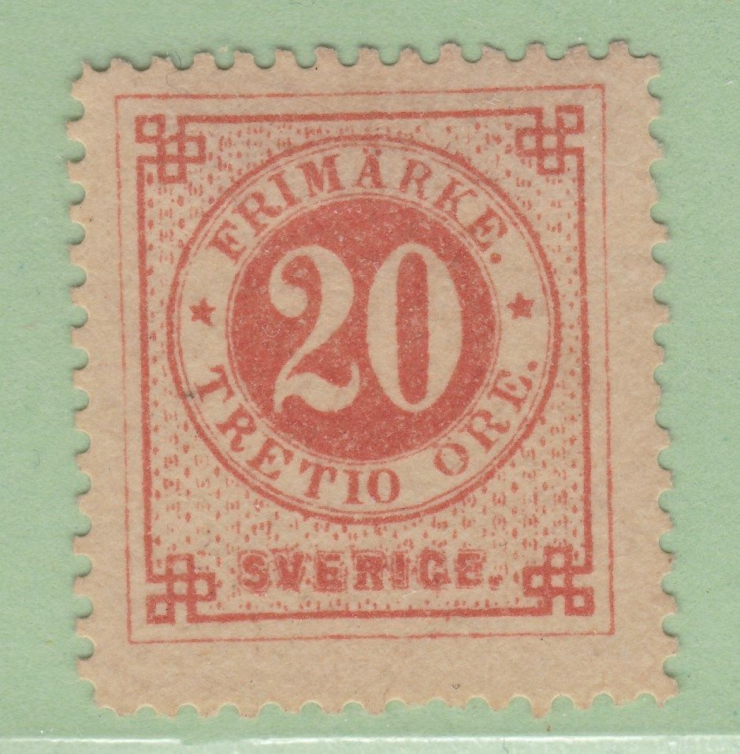
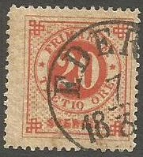
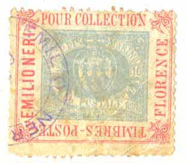

Return To Catalogue - Sweden 1885-1920 - Sweden miscellaneous - Local issues overview (bypost)
Note: on my website many of the
pictures can not be seen! They are of course present in the
catalogue;
contact me if you want to purchase it.
The stamps of Sweden were perforated right from the first issue in 1855.



3 s green 4 s blue 6 s grey to brown 8 s orange 24 s red
These stamps are perforated 14.
Value of the stamps |
|||
vc = very common c = common * = not so common ** = uncommon |
*** = very uncommon R = rare RR = very rare RRR = extremely rare |
||
| Value | Unused | Used | Remarks |
| 3 s | RRR | RR | |
| 4 s | RR | *** | |
| 6 s | RR | RR | |
| 8 s | RR | R | |
| 24 s | RRR | RR | |
value in 'Ore'
5 (fem) o green 9 (nio) o lilac 12 (tolf) o blue 24 (Tjugufyra) o yellow 30 (Trettio) o brown 50 (Femtio) o red
These stamps have perforation 14.
Value of the stamps |
|||
vc = very common c = common * = not so common ** = uncommon |
*** = very uncommon R = rare RR = very rare RRR = extremely rare |
||
| Value | Unused | Used | Remarks |
| 5 o | *** | ** | |
| 9 o | *** | *** | |
| 12 o | R | c | |
| 24 o | *** | *** | |
| 30 o | R | *** | |
| 50 o | R | *** | |
Great rarity, the 9 Sk in yellow colour instead of green:
(reduced size)
(Forgery)
Normally issued in green, a yellow variety of this stamp it was found in 1885 by Georg Wilhelm Backman on a letter during a visit to his grandmother. There is only one specimen known of this variety. It was printed with the wrong color meant for the 8 sk! In 1886 a stamp dealer (H.Lichtenstein) bought the stamp for 7 swedish krones. Ferrary, a well-known stampcollector, bought the stamp in 1894 from Lichtenstein through the stamp dealer Sigmund Friedl (or Siegmund?), a stamp dealer in Vienna, for 3000 Mark. When the Ferrary collection was sold in 1922, a certain Baron Leijenhufvud bought the stamp. It was then sold to Claes A.Tamm in 1926 for 1500 British Pounds and for 2000 British Pounds to Johan Ramberg (Gothenburg) two years later. The stamp was then sold to King Carol I of Rumania in 1937 for 5000 British Pounds. In 1950 it was sold to Rene Berlingin. Recently, in 1996 the stamp was sold for 2.5 million Swiss Franken (= $US 2.27 million). More information about the history of this stamp can be found on the site www.treskillingyellow.com. I have seen many forgeries of this stamp, but since only one specimen is known, they can easily be recognised (note that even the cancellation has been copied very carefully on the above forgeries). The involvement of Lichtenstein and Friedl makes certain experts doubt if this stamp was genuine in the first place, see http://www.bdph.de/kdb/fileadmin/PDF_Dateien/skilling.pdf.
Typical cancels
The first cancel is the most common cancel; a townname in a single circle with the date in the center. The second rectangular cancel is much rare and was frequently used on letters before stamps were introduced in Sweden. But it also continued to be used in many towns during the first years after stamps were introduced, but were subsequently replaced by round cancels (information and images obtained thanks to Lasse Hult).
Official reprints were made from the 'Skilling' values in 1868, 1871 and 1885, example:


These reprints are very difficult to distinguish from the genuine stamps. Some of them have perforation 13 instead of 14.
A reprint block of 9 stamps made in 1955 with two horizontal bars
across the value. I have seen such blocks of all five skilling
values and single reprints of all six ore values. All of them
have bars across the value.
The following "SFF" reprints were probably made for some kind of philatelic exhibition?

8 Sk with "SFF" perforation, made in 1970

Badly done 'reprint' with "SFF 1979" printed on the
backside.


Here a 24 sk in a minisheet with "SFF 1977" printed at
the back
I've seen reprints printed in the book 'Handbok over Sveriges Frankotecken 1855-1963' of all the "ORE" values ("NYTRYCK 1963". They have a bar across the value inscription at the bottom and are imperforate.
Sperati forgeries. Sperati used genuine paper with genuine cancels for his forgeries according to the BPA handbook:
I've been told that this is a Sperati forgery of the 3 Sk stamp.

Sperati's 'Reproduction B' of the 3 Sk stamp. Note the white
patches at both sides of the upper right '3'. I've also seen this
Sperati forgery in the color yellow.

Sperati forgery 'Reproduction A' of the 24 Sk stamp. Note the
white patches above the upper right '4'. There are also white
lines below the "FY" of "TJUGOFYRA".
'The Posthorn' (see http://posthorn.scc-online.org/volume_29-2.pdf) mentions so-called Paris forgeries of the 3 Sk stamps (or wrongly referred to as Sparre-proofs). They were made before 1934, since they were sold by the Paris stamp dealer Th.Lemaire. These forgeries are deceptive (probably made from a photograph). The two dots in the 'a' on the right hand side are missing. Apparently, the perforation in the corners is not consistent with the genuine stamp (line vs comb perforation). Besides the 3 sk Paris forgery, all the ore values were also forged in Paris.

I've been told that these are Paris forgeries.
The site http://posthorn.scc-online.org/volume_29-2.pdf further mentions a forgery of the 6 Sk with the '6's different on thicker paper. Also the perforation is wrong (11 1/2 instead of 14). Also a forgery of the 8 Sk is mentioned here with the design too high and too narrow. Also a forgery of the 24 Sk with inscription "TJUGUFYRA SKILL. B:co" instead of "TJUGUFYRA SK. B:co".
Other forgery:
The letters are different in the above forgery. This might be the forgery mentioned in 'The Philatelic Record' of 1904 (page 134); the period behind "SKILL" is missing and there are no dots on the "A" of "FRIMARKE".
I think the next stamps are forgeries made by Peter Winter in the 1980's:



(Peter Winter forgeries)

(Winter forgery of the misprint 3 sk yellow)
Peter Winter offered forgeries of the following values: 3 sk green, 4 sk blue, 6 sk grey-brown, 6 sk grey, 8 sk yellow and 24 sk red. Of course, he also made a forgery of the misprint 3 sk yellow, even a 3 sk yellow and 8 sk yellow printed together. As with all his forgeries, they have a very modern appearance, the paper is very white. I have also seen these Peter Winter forgeries with cancels; for example: "STOCKHOLM 18/5 18 56" on the 3 sk, "STOCKHOLM 11 7 18 57" on the 6 sk and 24 sk, or a three ring cancel with '1' in the center on the 8 sk value.


Some imperforate 'misprints' in the wrong colours, probably also
a product of Peter Winter
Some modern computer generated forgeries were made by the so-called Hialeah forger. These forgeries are very badly executed, examples:

(Hialeah forgery)
(Hialeah forgery, reduced size)
Some local stamps with inscription "FRIMARKE FOR LOKALBREF" were issued in 1856, click here for more information.

3 o brown 17 o grey to lilac 20 o red
These stamps are perforated 14.
Value of the stamps |
|||
vc = very common c = common * = not so common ** = uncommon |
*** = very uncommon R = rare RR = very rare RRR = extremely rare |
||
| Value | Unused | Used | Remarks |
| 3 o | ** | ** | |
| 17 o | R | *** | |
| 20 o | *** | ** | |
Reprints exists of these stamps, they were made in 1885.

Reprint with perforation 13.

A Sperati forgery
Sperati made forgeries made from erasing images from other stamps and then reprinting the design of the 17 o value on it. Thus the perforation, paper and cancel are genuine. The Sperati forgery has a dent in the upper left corner and an extension in the lower right corner according to the BPA book. .
2 o orange 3 o brown 4 o grey 5 o green 6 o lilac 12 o blue 20 o red 24 o yellow 30 o brown 50 o red
These stamps are peforated 13 to 14.


In 1886 a blue posthorn was applied on the backside of certain values of these stamps (4 o, 5 o, 20 o, 30 o and 50 o). In 1887 a 2 o and in 1888 a 6 o was issued with the same posthorn. The value 2 o only exists with posthorn on the back.

A misprint of the 20 o, with "TRETIO" instead of
"TJUGO".
Value of the stamps |
|||
vc = very common c = common * = not so common ** = uncommon |
*** = very uncommon R = rare RR = very rare RRR = extremely rare |
||
| Value | Unused | Used | Remarks |
| With no posthorn on the back, perforated 13 to 14 | |||
| 3 o | * | c | |
| 4 o | *** | vc | |
| 5 o | *** | vc | |
| 6 o | ** | c | A colour variety in olive exists. |
| 12 o | * | vc | |
| 20 o | *** | vc | Misprint 'TRETTIO' instead of 'TJUGO': RRR |
| 24 o | ** | * | |
| 30 o | *** | c | |
| 50 o | *** | c | |
| With posthorn on the backside (1886), perforated 13 | |||
| 2 o | c | * | |
| 3 o | * | * | |
| 4 o | * | c | |
| 5 o | * | vc | |
| 6 o | * | * | |
| 20 o | * | c | |
| 30 o | *** | c | |
| 50 o | *** | c | |
Surcharged with 3 crowns (1889)

'10 TIO ORE' on 12 o blue '10 TIO ORE' on 24 o yellow
Value of the stamps |
|||
vc = very common c = common * = not so common ** = uncommon |
*** = very uncommon R = rare RR = very rare RRR = extremely rare |
||
| Value | Unused | Used | Remarks |
| 10 o on 12 o | c | c | |
| 10 o on 24 o | ** | ** | |
Overprinted in blue "FRIMARKE LANDSTORMEN FRIMARKE" (War issue, 1916)


5 o + 5 o on 2 o orange 5 o + 5 o on 3 o brown 5 o + 5 o on 4 o grey 5 o + 5 o on 5 o green 5 o + 5 o on 6 o violet 10 o + 10 o on 12 o blue 10 o + 10 o on 20 o red 10 o + 10 o on 24 o yellow 10 o + 10 o on 30 o brown 10 o + 10 o on 50 o red
Forgeries of the 5 o surcharge exist with a damaged upper right hand side of the '5' (source: http://posthorn.scc-online.org/volume_30-3.pdf).
Forged overprint
Value of the stamps |
|||
vc = very common c = common * = not so common ** = uncommon |
*** = very uncommon R = rare RR = very rare RRR = extremely rare |
||
| Value | Unused | Used | Remarks |
| All values | * | * | |
Overprinted in blue "FRIMARKE LANDSTORMEN FRIMARKE" (War issue, 1916), further surcharged

7 + 3 on 5 o + 5 o on 2 o orange 7 + 3 on 5 o + 5 o on 3 o brown 7 + 3 on 5 o + 5 o on 4 o grey 7 + 3 on 5 o + 5 o on 5 o green 7 + 3 on 5 o + 5 o on 6 o violet 12 + 8 on 10 o + 10 o on 12 o blue 12 + 8 on 10 o + 10 o on 20 o red 12 + 8 on 10 o + 10 o on 24 o yellow 12 + 8 on 10 o + 10 o on 30 o brown 12 + 8 on 10 o + 10 o on 50 o red
Value of the stamps |
|||
vc = very common c = common * = not so common ** = uncommon |
*** = very uncommon R = rare RR = very rare RRR = extremely rare |
||
| Value | Unused | Used | Remarks |
| All values | * | * | |

A "STOCKHOLM SÖDER." cancel.

Forgeries of the misprint.

Forgeries of the misprint of the 20 o, with "TRETIO" instead of "TJUGO" exist, usually by scraping out the word "TJUGO" and replacing it by "TRETIO". However, the stars in the genuine misprint are placed slightly higher. In a document of Tomas Bjäringer, he says that Fournier also made forgeries of this stamp. However, the Fournier forgeries were confiscated on the request of the Swedish Post. The perforations in the corners do not match in the Fournier products. Fournier stated that 'Emilio Neri of Florence' had printed these stamps for him.

Reprint made in 1978 with "SFF 1978" printed at the
back, probably issued for some kind of philatelic event.
1 Riksdaler brown and blue 1 Krone brown and blue
Value of the stamps |
|||
vc = very common c = common * = not so common ** = uncommon |
*** = very uncommon R = rare RR = very rare RRR = extremely rare |
||
| Value | Unused | Used | Remarks |
| With no posthorn on the back, perforated 13 to 14 | |||
| 1 R | R | *** | |
| 1 K | *** | * | Perforated 13 |
With posthorn on the back (1886), perforated 13 |
|||
| 1 K | ** | c | |
For stamps of Sweden issued from 1885 to 1920 click here.


{kind=link}
{kind=link}
{kind=link}
{kind=link}
{kind=link}
{kind=link}
{kind=link}